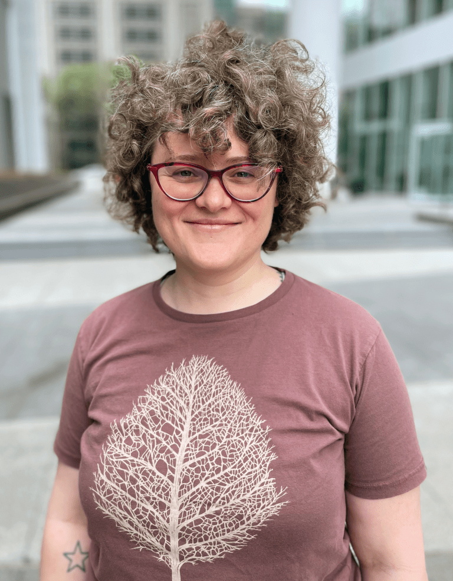
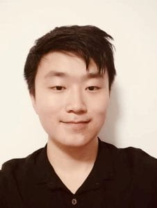
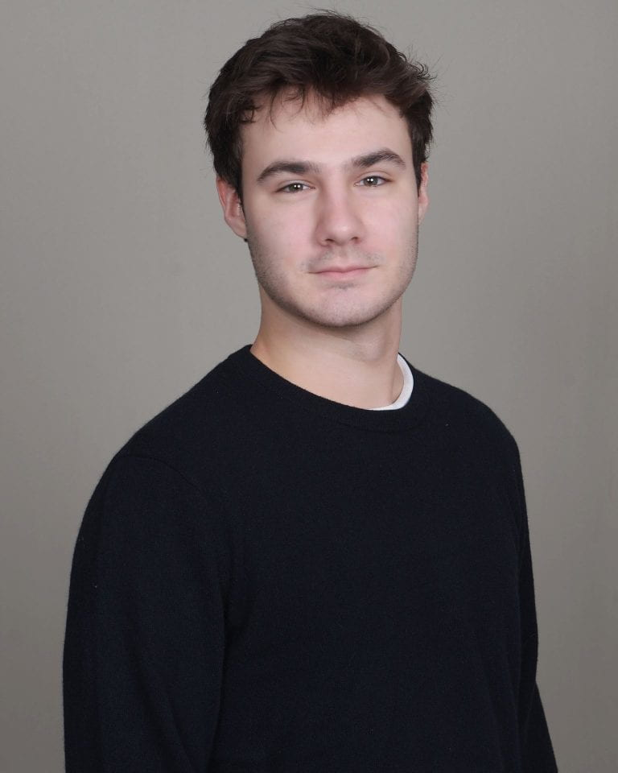
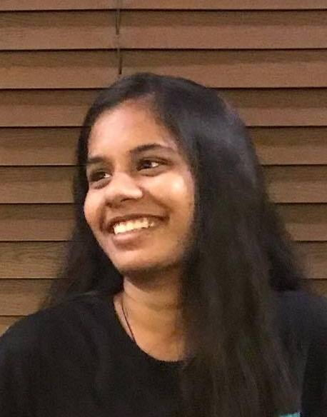
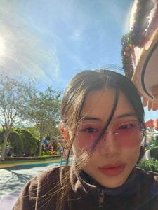
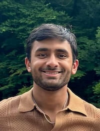
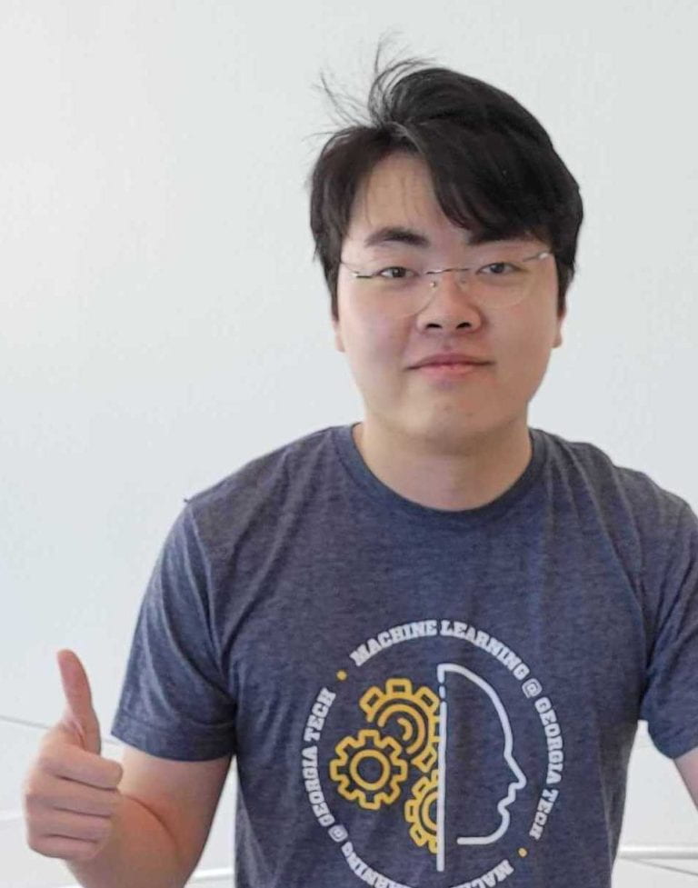
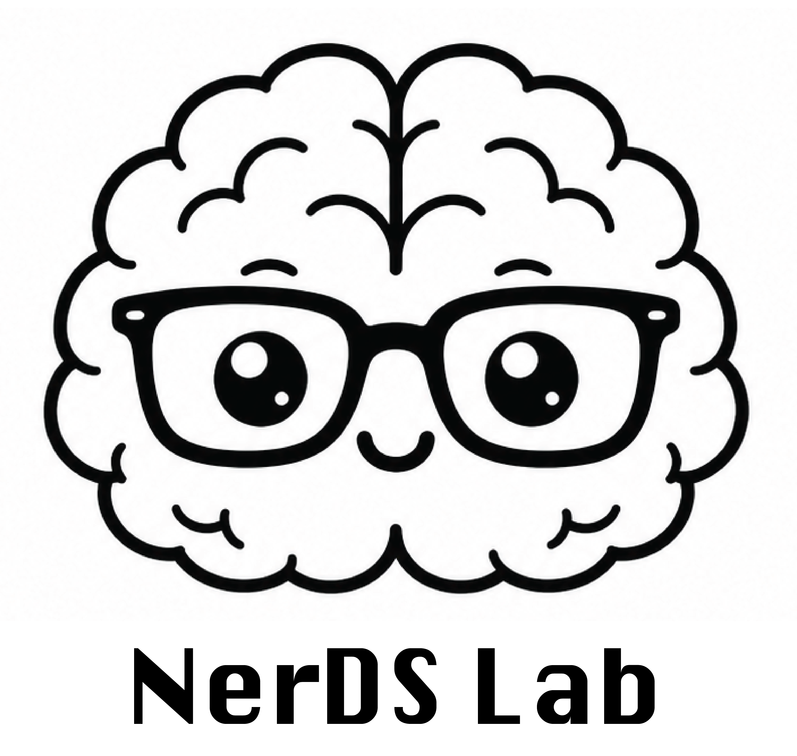

People
Principal Investigator

Eva Dyer
Eva Dyer (she/they) is the Rachleff Family Associate Professor at the University of Pennsylvania. Dr. Dyer leads the NerDS Lab, which focuses on representation learning, generative modeling, and AI for science. A key area of the lab’s research focuses on AI for neuroscience, where they aim to develop tools to better understand the brain and neural computation, and to uncover abstractions of natural intelligence for creating new brain-inspired AI.
Postdocs
Sergey Shuvaev
Joint postdoc with the NerDS and Pesaran labs. Sergey’s research focuses on biologically informed models of decision-making, integrating AI with neuroscience. He holds degrees from MIPT and has worked at Cold Spring Harbor Lab.
PhD Students
Alexandre Andre
Alexandre Andre is a first-year PhD student in Computer & Information Science at UPenn. He graduated with a Master’s degree in Computer Science from the University of Technology of Compiègne.
Vinam Arora
Vinam Arora is a third-year PhD student in Computer & Information Science at UPenn. He completed his undergraduate studies in Electronics at the Indian Institution of Technology (IIT) in Roorkee and worked as a Design Engineer at Texas Instruments.

Zihao Chen
Zihao Chen is a third year PhD student in Computer & Information Science at UPenn. He received his bachelor’s degree in Biology from Wuhan University and Master of Engineering in Biomedical Engineering from Fudan University in 2023.

Ian Knight
Ian Knight is first-year PhD student in the Computer & Information Science at UPenn. He received his bachelor's degree in Computer Science from the Georgia Institute of Technology.

Divyansha Lachi
Divyansha is a third year Ph.D. student in Computer & Information Science at UPenn. She received her B.Tech in Computer Science and Engineering from the National Institute of Technology, Silchar, India.

Wenrui Ma
Wenrui Ma is currently a first-year PhD student in Computer & Information Science at UPenn. She graduated with a Bachelor’s degree majoring in Computer Science and minoring in Math from Hunan University in Changsha.

Shivashriganesh Mahato
Shivashriganesh Mahato is a second-year PhD student in Computer & Information Science at UPenn. He received his BS in Applied Mathematics and MS in Computer Science from Texas A&M University.

Jingyun Xiao
Jingyun is a PhD student in Computer & Information Science at UPenn. He received his bachelor’s degree in CS from University of Chinese Academy of Sciences and MS in Computer Science from Georgia Tech in 2023.
Masters Students

Stephen Kwak
Stephen Kwak is a Master's student at UPenn.
Keshav Balaji
Keshav Balaji is a first-year Master's student in Computer & Information Science at UPenn. He received his BS in Computer Science from UW Madison.
Research Staff
Jacob Poschl
Jacob Poschl is a member of the research staff in the NerDS Lab. He received his BS in Computer Science from UCSC.
Alumni
PhD Students
-
Mehdi Azabou
Ph.D. Student (2020–2024)
Outstanding Graduate Student in ECE (2024), Spotlight @ NeurIPS
Thesis: Building a Foundation Model for Neuroscience
Postdoc with Liam Paninski and Blake Richards @ Columbia University / Mila
Now CTO at Constellation -
Ran Liu
Ph.D. Student (2019–2024)
Rising Star in EECS (2023), CSIP Research Award (2023), Oral @ NeurIPS
Thesis: Generalizable and Explainable Methods for Learning from Physiological Data and Beyond
Now at Apple -
Chi-Heng Lin
Ph.D. Student (2018–2022)
TRIAD Research Fellowship (2020)
Thesis: Understanding Data Manipulation and How to Leverage it to Improve Generalization
Samsung Research → Meta
MS Students
- Venky Ganesh, M.S. (2022–2024) → NVIDIA
- Keerthan Ramnath, M.S. (2022–2024) → Apple
- Amrit Khera, M.S. (2023–2024) → OpenAI
- Aishwarya Balwani, M.S. (2018–2021) → Ph.D. in ECE @ Georgia Tech
- Kyle Milligan, M.S. (2018–2020) → Northrop Grumman
- TJ LaGrow, M.S. (2017–2019) – NSF GRFP Honorable Mention → Ph.D. in ECE @ Georgia Tech
Undergraduate Students
- Michael Mendelson, Undergraduate Researcher (2020–2024) – President’s Undergraduate Research Award (2022, 2023) → Ph.D. @ Columbia
- Matthew Jin, Undergraduate Researcher (2022–2023) → Master’s @ Stanford
- Carolina Urzay, Undergraduate Researcher (2021–2022) → Master’s @ TU Delft
- Joy M. Jackson, Undergraduate Researcher (2021–2022) – NSF GRFP (2023), REU SURE (2021), Best Research in Biomedical Category → Ph.D. @ Georgia Tech with Alex Abramson
- Zijing Wu, Undergraduate Researcher (2020–2021) → Anqi Wu’s Lab @ Georgia Tech, now Ph.D. @ McGill
- Amaal Abdi, High School Intern (2020–2021) → Undergraduate @ Wharton, University of Pennsylvania
- Max Dabagia, Undergraduate Researcher (2018–2020) – NSF GRFP (2020), PURA (2019) → Ph.D. @ Georgia Tech with Santosh Vempala, now Postdoc with Christos Papadimitriou @ Columbia
- Alexis Webber, Undergraduate Researcher (2019) – Charles Hancock Award for Neuroengineering Research → Alpha Omega
- Joseph Miano, Undergraduate Researcher (2018–2020) – PURA (2019) → M.S. in CS, JPMorgan Chase